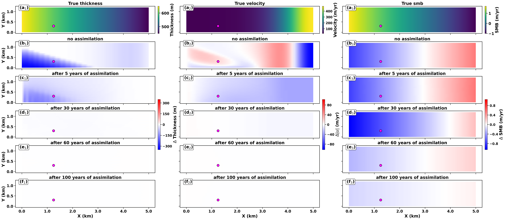

Boise State University (BSU)
2024Computing Ph.D. in Computational Math Sciences and Engineering
Dissertation: GeoFlood: A Computational Model for Overland Flooding
Advisor: Prof. Donna Calhoun
Advisor: Prof. Donna Calhoun
Research
Scientific computing, computational mathematics, numerical modeling, data assimilation, and machine learning for cryosphere and Earth-system applications.
State and parameter estimation using ensemble methods; coupling ICESEE with ISSM and Icepack; understanding ice-sheet dynamics and their contribution to future sea-level change.
Finite volume methods, Riemann solvers for wet/dry interfaces, adaptive mesh refinement, and accelerated wave-propagation algorithms for overland flooding.
MPI-based ensemble workflows, CPU/GPU acceleration, Python–MATLAB interoperability, containerized environments, and scientific workflow orchestration across HPC and cloud platforms.
I develop CryoStack to connect models, observational datasets, data assimilation, and heterogeneous computing resources through distinct scientific applications. This work supports open scientific software and data in cryosphere research.
My research interests include machine learning and data-driven approaches to predictive modeling and simulation, alongside numerical methods and ensemble data assimilation.
Selected results




Selected funded project
Research Scientist II in the School of Earth and Atmospheric Sciences at the Georgia Institute of Technology, September 2026–Present. Previously, Postdoctoral Research Fellow at Georgia Tech, August 2024–August 2026; Graduate Research Assistant at Boise State University, August 2020–July 2024, and intern at Idaho National Laboratory, May–September 2022.
Full experience in my CV ↗Computing Ph.D. in Computational Math Sciences and Engineering
Master of Science in Mathematical Sciences (Climate Resilience)
Bachelor of Science in Physical Sciences (Physics and Mathematics)